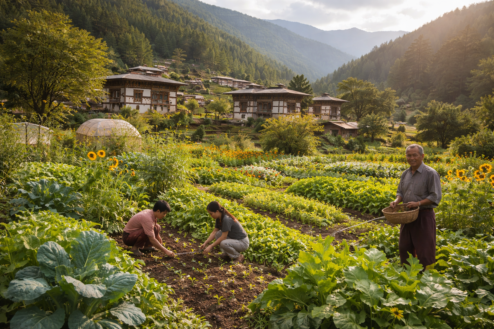
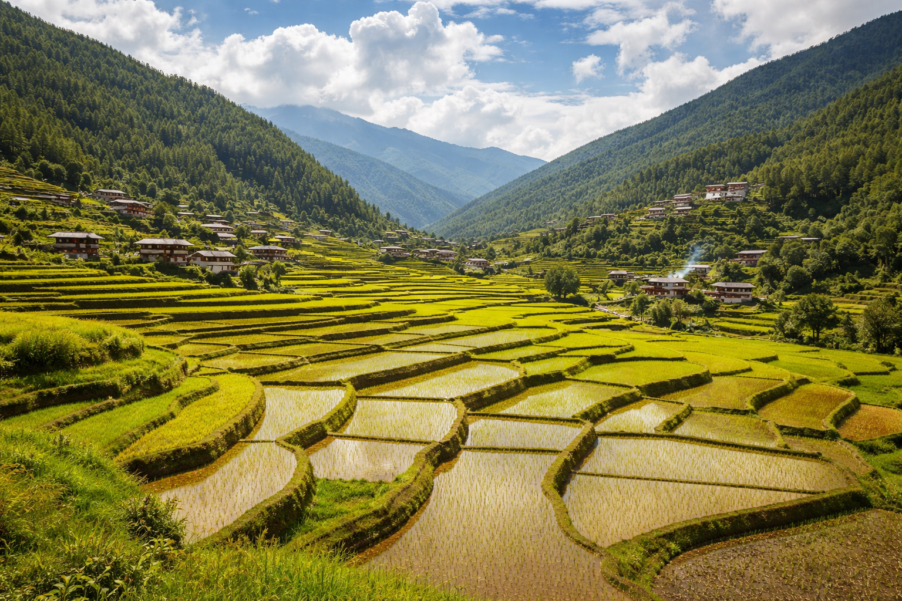

Where Education Meets the Living World
Jamyang Ecoversity is a living-learning center for regenerative education, cultural renewal, ecological stewardship, and meaningful livelihood. We reconnect education with life.


Reconnecting Education with Life
Jamyang Ecoversity is a hands-on, place-based learning center rooted in land, culture, community, and purpose. We prepare learners not just for careers, but for lives of meaning, stewardship, and contribution. Our holistic approach integrates ecological intelligence, traditional wisdom, practical skill, and inner development to meet the real needs of people and planet.
Why This Matters
Around the world, conventional education is failing to address the defining challenges of our time.
Disconnection from Land
Communities everywhere are losing their relationship with the earth, with practical skills, and with each other.
Youth Without Direction
Young people graduate without clarity, purpose, or pathways to work that truly matters.
Wisdom Being Lost
Traditional knowledge, ancestral practices, and place-based intelligence are fading with each generation.
Extractive Systems
Dominant economic and educational models deplete rather than regenerate the systems that sustain life.
What We Do
Six pillars of regenerative education that form the foundation of everything we teach and practice.
Regenerative Education
Learning that restores ecosystems, strengthens communities, and develops whole human beings.
Ecological Stewardship
Deepening our relationship with land and cultivating responsibility for the health of living systems.
Meaningful Livelihood
Building dignified work that serves people and planet through ethical enterprise and local economy.
Cultural Renewal
Reviving ancestral wisdom and cultural practice, making traditional knowledge relevant for today.
Holistic Wellbeing
Nurturing physical, emotional, mental, and spiritual health within a supportive community.
Community Resilience
Strengthening the collective capacity of communities to adapt, thrive, and lead change.

Eight Learning Areas
Integrated domains of study designed for regenerative living and meaningful contribution.
Regenerative Agriculture & Food Systems
Natural Building & Ecological Design
Traditional Knowledge & Cultural Literacy
Holistic Wellbeing
Regenerative Livelihoods & Social Enterprise
Ecological Stewardship & Restoration
Appropriate Technology & Innovation
Leadership, Purpose & Community Engagement
How It Works
A rhythm of learning rooted in practice, reflection, and real-world application.
Learners live and work on campus, engaging in daily cycles of hands-on practice, mentorship, group reflection, and independent study. Each program weaves together multiple learning areas, ensuring that knowledge is never abstract but always connected to land, community, and livelihood.
Our approach integrates head, heart, and hands. Theory meets practice in the field, the workshop, and the kitchen. Personal growth meets collective responsibility through shared work and shared purpose.
Who It Serves
Our programs are designed for anyone ready to learn differently and live with greater intention.
Young People
Seeking direction, practical skills, and meaningful work that aligns with their values.
Community Leaders
Looking to deepen their capacity for ecological stewardship and regenerative development.
Educators & Practitioners
Exploring place-based, holistic, and regenerative approaches to teaching and learning.
Career Changers
Transitioning toward regenerative livelihoods that contribute to community and planetary wellbeing.
Our Vision
A world where education nurtures life, not just careers.
We envision grounded, capable, creative, and community-centered people leading the transition to regenerative ways of living. Education that teaches us how to care for the land, strengthen community, cultivate wisdom, and contribute meaningfully to the future of all life.
Jamyang Ecoversity is both a place and a model. Rooted in one landscape, designed to be adapted anywhere. Our work is local in practice and global in relevance.
Join the Movement
Whether you want to learn, teach, partner, or support, there is a place for you here.